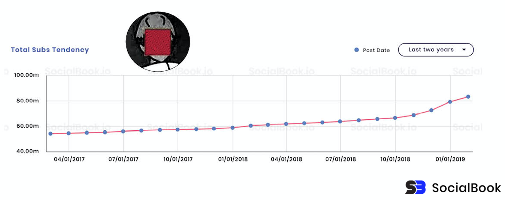

Felix Arvid Ulf Kjellberg (Gotemburgo, Suecia, 24 de octubre de 1989), más conocido por su alias en línea PewDiePie, es un comediante y creador de vlogs sueco que publica en la plataforma multimedia YouTube.
En 2010, PewDiePie inició la carrera de Economía Industrial y Gestión de Tecnología en la Universidad Tecnológica Chalmers. Durante el tiempo que pasó en la universidad registró su segunda cuenta de YouTube como PewDiePie tras perder el acceso a su cuenta principal Pewdie. Al año siguiente abandonó la universidad después de perder interés en su carrera, lo que causó la desaprobación de sus padres y el fin del apoyo económico que ellos le proveían. Después de no poder obtener un empleo en una agencia de publicidad en Escandinavia, decidió enfocarse en crear contenido en YouTube. Para sustentarse empezó a vender arte de Photoshop y a trabajar en un puesto de perritos calientes ambulante. En julio de 2012 su canal superó el millón de suscriptores.
Historia · Influencia en los videojuegos · Grafica de suscriptores · 4
Historia
PewDiePie originalmente registró una cuenta de YouTube bajo el nombre de "Pewdie"; explica que "pew" representa el sonido de los láseres y "die" significa "muere".Después de olvidar la contraseña para esta cuenta, el 29 de abril de 2010 registró el canal de YouTube "PewDiePie". Para diciembre de 2011, el canal de PewDiePie tenía alrededor de 60.000 subscriptores. El 11 de julio de 2012 el canal alcanzó 1 millón de subscriptores, y llegó a dos millones en septiembre de ese año.
El 18 de febrero de 2013, el canal PewDiePie alcanzó 5 millones de suscriptores, y en abril, PewDiePie obtuvo una cobertura en The New York Times tras superar los 6 millones. En mayo, en la inauguración de los Premios de Estrellas Sociales Starcount en Singapur, PewDiePie ganó el premio a la estrella social sueca. Compitiendo contra Jenna Marbles, Smosh y Toby Turner, PewDiePie también ganó el premio al show social más popular.
Influencia en los videojuegos
Los comentarios de PewDiePie han tenido un efecto positivo en las ventas de juegos independientes. Por ejemplo, los desarrolladores de McPixel declararon: "La fuerza más grande de atracción a McPixel en ese momento eran los vídeos "Let's Play" (juguemos). Mayormente por Jesse Cox y PewDiePie". Se ha confirmado que PewDiePie también ha influido positivamente en las ventas de Slender: The Eight Pages y Goat Simulator. Aunque los juegos que se ofrecen en el canal de PewDiePie han contribuido a su éxito comercial, ha dicho, "Sólo quiero jugar a los juegos, no influir en las ventas". PewDiePie, junto con los personajes de Amnesia: The Dark Descent, que PewDiePie renombró y rehízo personajes dentro de sus propios comentarios, fueron referenciados en un nivel diseñado por McPixel en su honor. Además, en el videojuego Surgeon Simulator 2013, la etapa de Cirugía Extraterrestre cuenta con un órgano llamado "Pewdsball" en honor a PewDiePie. PewDiePie acordó permitir que los desarrolladores de Surgeon Simulator 2013 utilizaran su imagen en GOTY IDST, un videojuego de simulación de la ducha. PewDiePie también se incluyó como un NPC en el juego indie, Party Hard.
Grafica de suscriptores
Número de suscriptores desde principios de 2017 hasta principios de 2019
